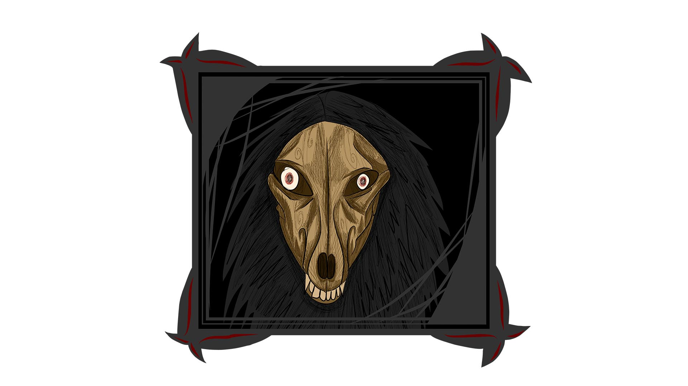
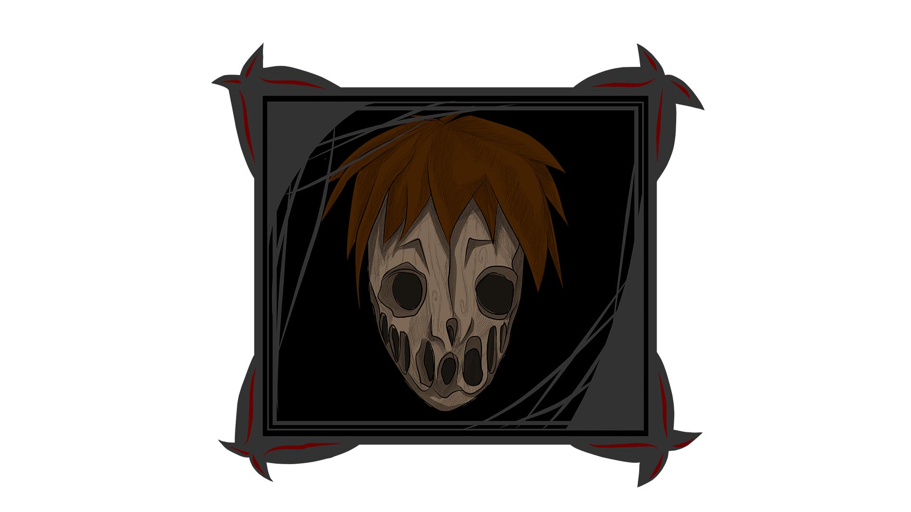
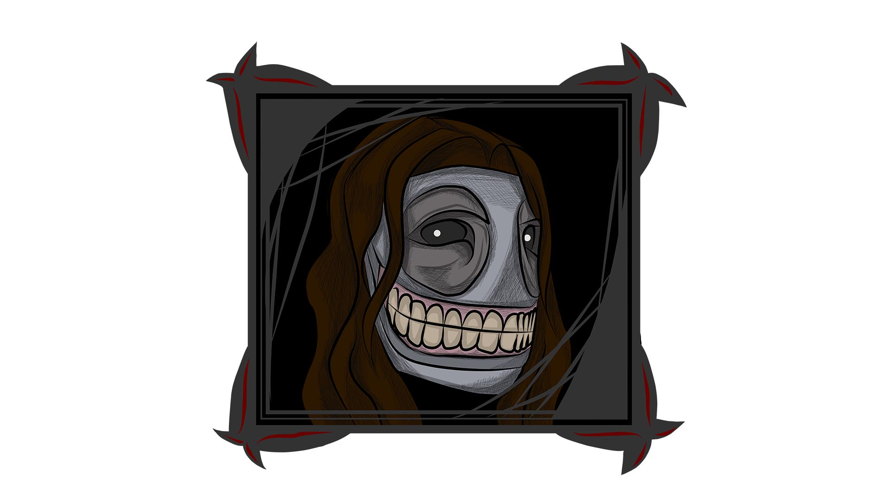
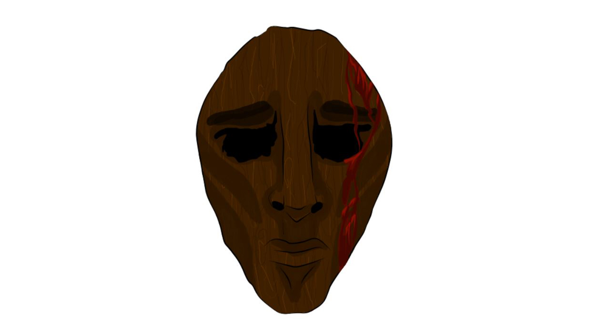
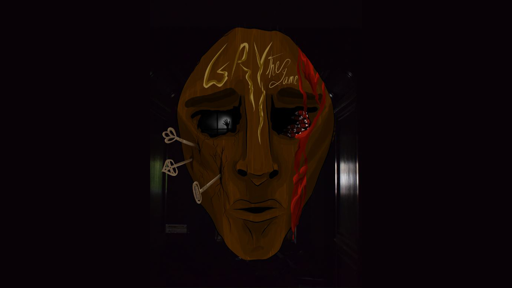
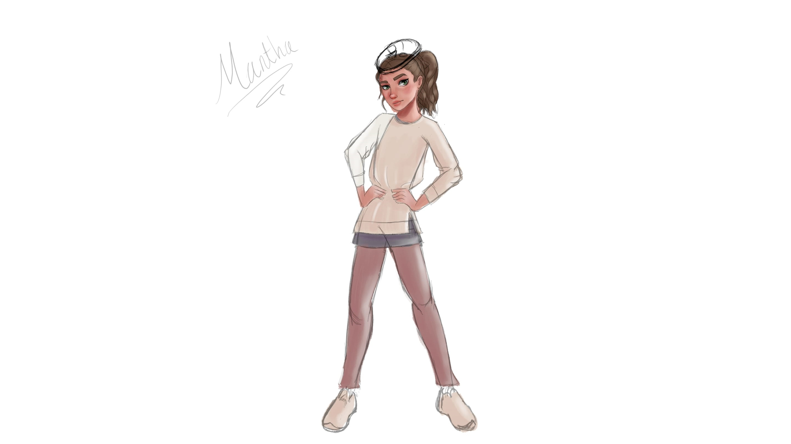
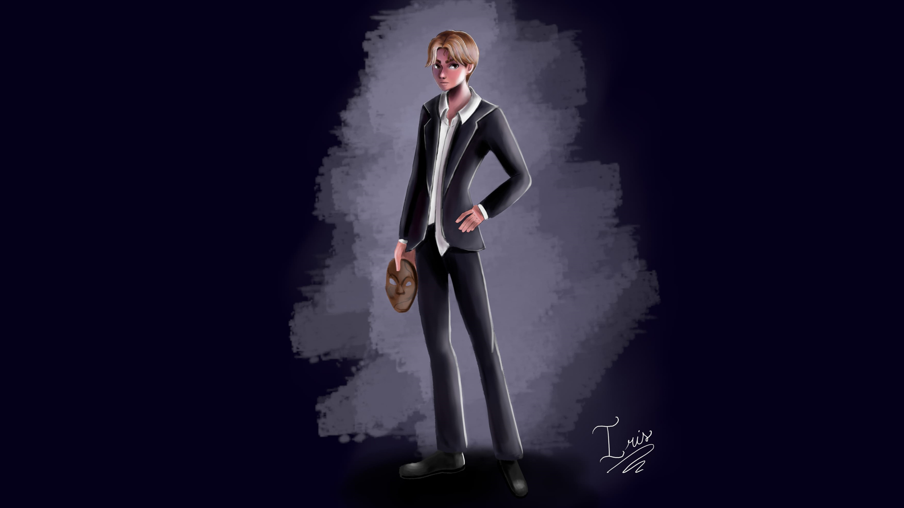
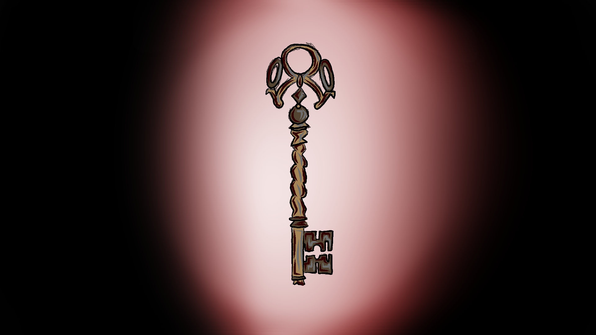
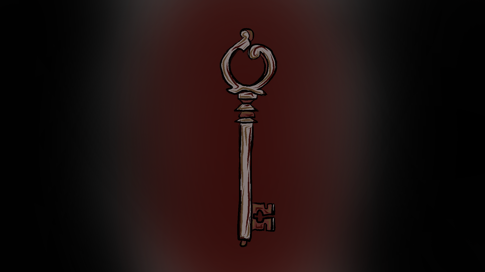
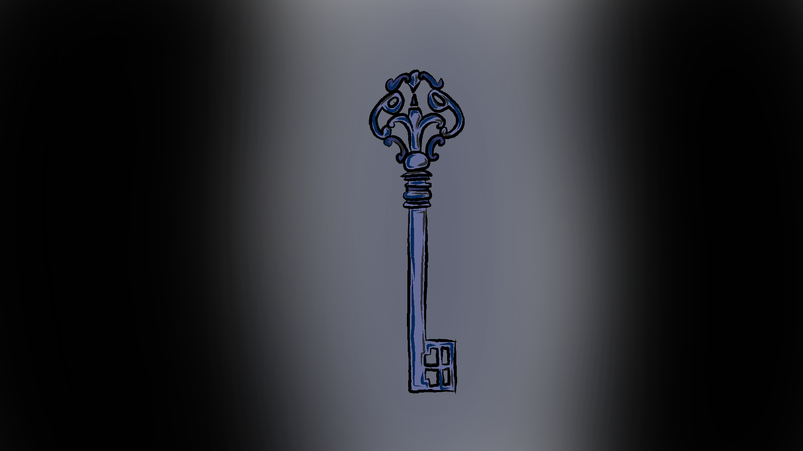

1 / 3

2 / 3

3 / 3

4 / 3

5 / 3

6 / 3

7 / 3

8 / 3
9 / 3

10 / 3
11 / 3
12 / 3

13 / 3

14 / 3

Hoffman se despierta en mitad de unas ruinas que no es capaz de reconocer, habitada por unos personajes con máscaras de madera y unos seres que quieren atrapar a Hofmann por cualquier medio. Aprovechando los misteriosos poderes de su máscara de madera y diversas armas a lo largo del juego, se abrirá paso a través de las sombras hacia el interior de las ruinas, combatiéndolas o escapando de horrores que no deberían haber despertado. Tras hacerse con las 3 llaves ocultas “en lo más profundo de la vida”, Hofmann podrá al fin abandonar su laberíntica pesadilla a través de las puertas de los jardines. No obstante, hay fuerzas interesadas en que Hofmann no consiga su objetivo.
Figura antropomórfica que siempre parece pisar los talones al protagonista, sin importar dónde esté. Junto con Itami, controla el resto de las sombras de las ruinas. Su naturaleza es la más incierta de todas.
Se despierta en un mundo de pesadilla y desea escapar a toda costa. Nadie sabe por qué Itami y las sombras están interesados en él, pero nada bueno puede ocurrir si lo atrapan.
Niña egocéntrica y algo molesta, mucho más amiga de Iris que de Miso. Su figura está poseída por la paranoia y la desconfianza hacia extraños, por lo que nunca fue partidaria de ayudar a Hofmann a escapar.